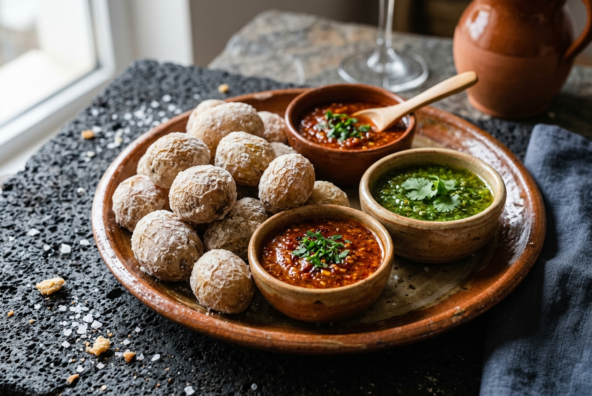
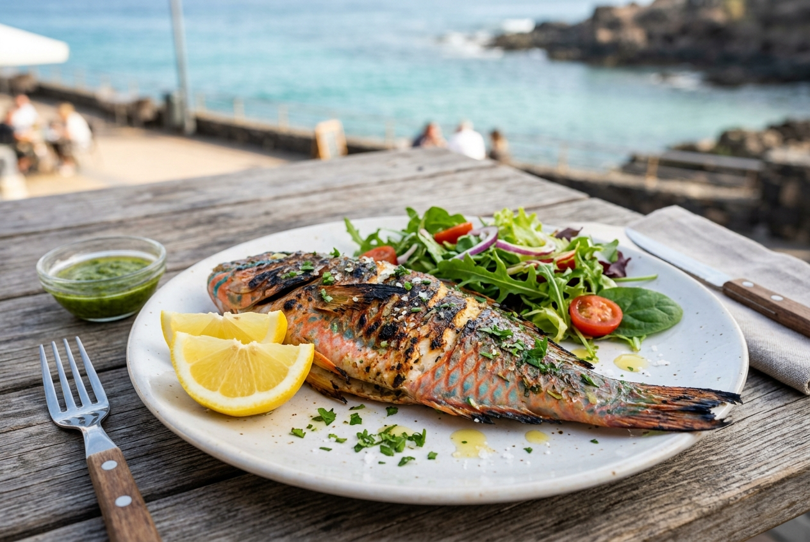
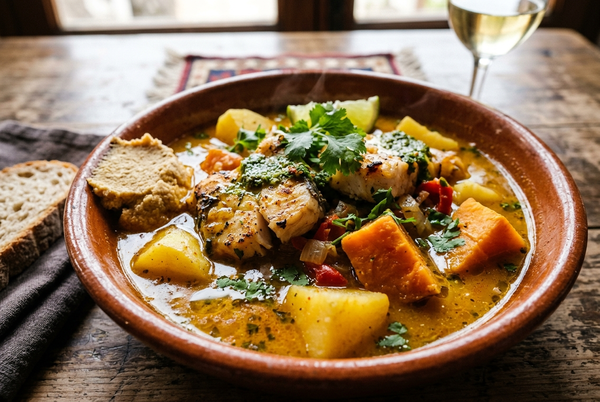
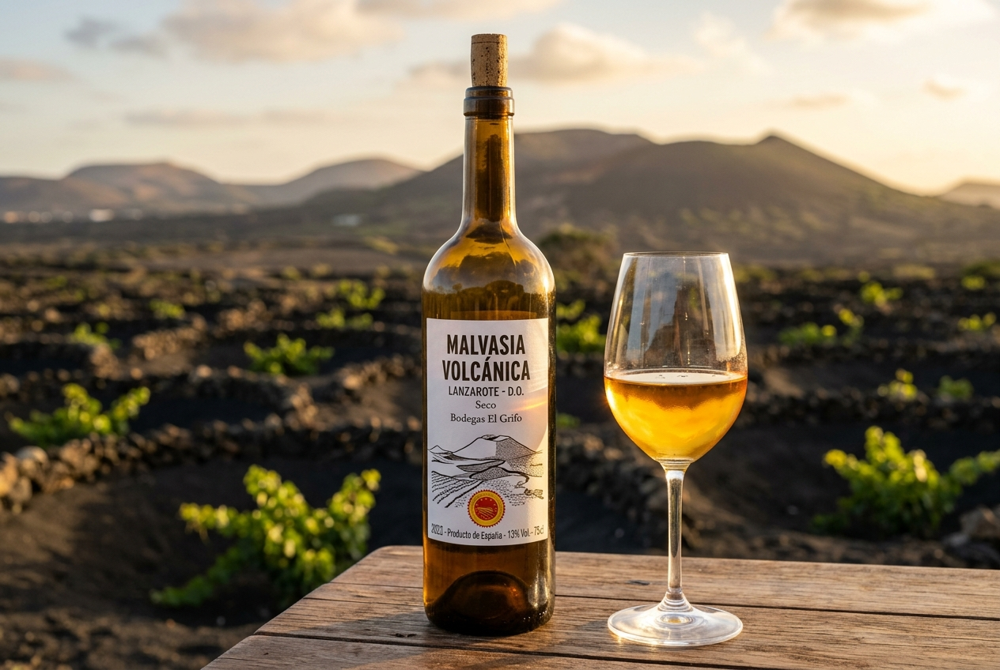
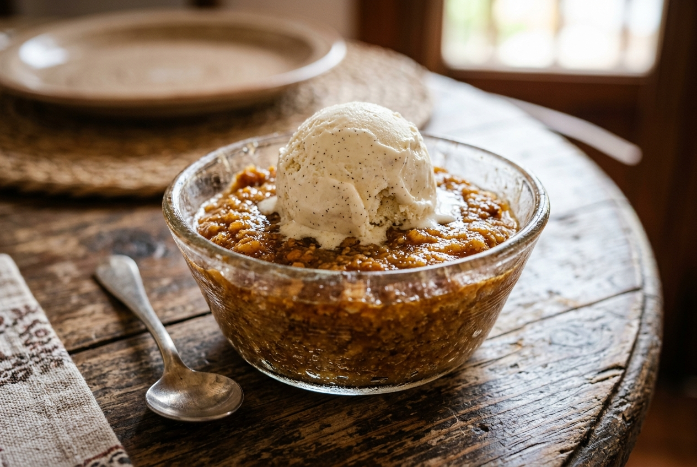

⭐ Da non perderePapas Arrugadas con Mojo
Il piatto simbolo delle Canarie. Piccole patate cotte in acqua di mare che formano una crosticina di sale sulla buccia rugosa. Vengono servite con due salse imperdibili:
- Mojo Rojo: piccante, con peperoni, aglio e paprika
- Mojo Verde: fresco e delicato, con coriandolo e aglio

🐟 Pesce localeVieja alla Griglia
La vieja (pesce pappagallo) è il pesce tipico per eccellenza delle Canarie, pescato fresco ogni giorno nell'Atlantico. Alla griglia esalta la sua carne bianca e delicata. Da assaggiare anche il Salpicón de Pulpo (insalata di polpo) e i chiringuitos di Arrieta.

🏠 TradizionaleSancocho Canario
Zuppa-stufato di cernia o altri pesci locali, servita con patate, patate dolci e immancabilmente accompagnata da una porzione di Gofio escaldado, la farina di cereali tostati degli antichi Guanci. Uno dei piatti più autentici dell'isola.

🍷 EccellenzaMalvasia Vulcanica
Il vino più famoso di Lanzarote, prodotto nella zona de La Geria da viti coltivate nella cenere vulcanica nera. Un terroir unico al mondo che regala vini bianchi freschi e minerali. Una degustazione in una bodega (es. El Grifo) è d'obbligo.

🍯 DolceBienmesabe
Il dolce tradizionale per antonomasia. Una crema vellutata di mandorle, miele, tuorli e cannella, servita tiepida con gelato alla vaniglia. Il nome significa "che buon sapore mi dà". Da accompagnare con le Truchas (panzerotti ripieni di patate dolci).
Prodotti tipici da comprare da HiperDino, Eurospar o Mercadona da portare a casa o provare in appartamento.
Le salse tipiche in vasetto. Il souvenir gastronomico numero uno da portare a casa.
💶 ~2-4€Formaggio di capra canario, spesso stagionato. Prova a mangiarlo fritto con mojo rojo.
🏆 PremiatoLa farina di cereali tostati ancestrale. Ottima nel latte a colazione o mescolata nelle zuppe.
🥣 ColazioneRum al miele delle Canarie, dolce e vellutato. Ottimo freddo dopo cena come digestivo.
🍹 LiquoreRarissima fuori dall'isola. Si trova nei reparti gourmet, spesso miscelata con arancia o fico.
🎁 SouvenirProdotto nelle antiche saline dell'isola. Pregiato e leggero, perfetto per condire il pesce.
🌊 LocaleAl supermercato costa meno che in bodega. Cerca le etichette di Bodegas El Grifo o Vulcano.
💶 ~5-12€Non alimentare ma irrinunciabile! Creme e gel di Aloe delle Canarie: qualità eccezionale a prezzi bassi.
💆 CosmeticaCerca i Teleclub nei villaggi rurali (Tao, Mozaga, Tiagua): locali gestiti dai residenti con cucina casalinga autentica a prezzi irrisori. Grazie al regime fiscale speciale Canario (IGIC), alcol e cosmetici costano meno che in Italia!
Info Pratiche
🏠 Alloggio
Costa Teguise – Base per tutte le escursioni
📍 Avenida del Jablillo 12, 35508 Costa Teguise, Spagna
🌅 Pueblo Marinero per cene e passeggiate serali
🗺️ Apri in Google Maps🚗 Auto a Noleggio
CICAR – Ritiro e consegna in aeroporto
Patente + Carta di credito. Fare pieno prima della riconsegna.
✅ Prenotazioni Confermate
- 18 Ago 09:30 – Montañas del Fuego (Timanfaya)
- 25 Ago 09:00 – Safari in mare (Puerto Calero)
✈️ Voli
Andata: 16 Ago – Arrivo 17:50 (ACE)
Ritorno: 30 Ago – Partenza 18:25 (ACE)
📞 Numeri Utili
- Emergenze: 112
- CICAR: +34 928 822 900
- Líneas Romero (traghetti): +34 928 842 055
💡 Consigli
- Portare crema solare SPF 50 e cappello
- Scarpe da trekking per escursioni vulcaniche
- Contanti per Teleclubes e mercatini
- Prenotare ristoranti per il weekend in anticipo